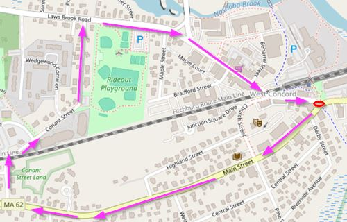
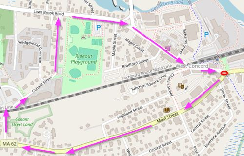
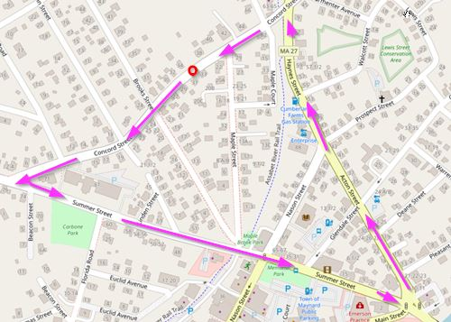
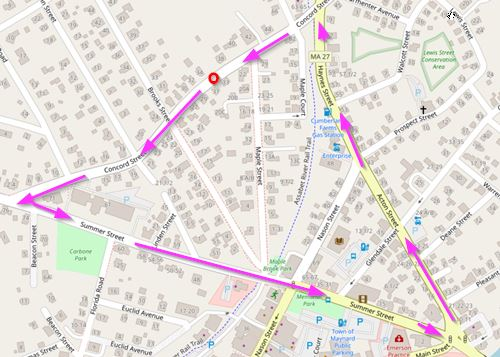

2024-11-24 by Morgan Jassen on lemonmama.com/walking
I'm Going Walking
I'm going walking around town.
I call this "Precious Walking"
The goal is to get exercise and be social, in other words, is to be healthier and wealthier, wiser and smarter, and happier and richer.
This time is precious because I invite kindred spirits to spend time together socializing, and also it doesn't cost any money so it conserves our life energy.
The main rule for Precious Walking is good judgement, and best effort, for civil and respect.
Sometimes I call Precious Walking 'Before After Work Social Time'.
Meeting times for Precious Walking should be 6am and 8pm, daily, meeting at the starting point and depart promptly, and walking for a mile or three.
Which town/map to choose, is which is closest for the main core Precious Walkers of this group. If it's sparked from work colleagues, then reasonable to choose the route near the workplace. If sparked from home, logical to choose the route near home.
Which time to choose, envisioned is before work or after work. Because vision is to add more people into the group later, and main factor for this is choosing time before/after work. For example for morning then (6:00am or 6:30am) or for night then (7:30pm or 8:00pm)
~~~
West Acton sidewalks map is here:
 West Concord:

Concord:
West Concord:

Concord:
 Maynard:

****** LATEST SCHEDULE: ******
YYYY-MMM-DD NN
2024-Nov-01 Fri ... No, the meeting is OFF for today
2024-Nov-02 Sat ... No, the meeting is OFF for today
2024-Nov-03 Sun ... No, the meeting is OFF for today
2024-Nov-04 Mon ... No, the meeting is OFF for today
2024-Nov-05 Tue ... No, the meeting is OFF for today
2024-Nov-06 Wed ... No, the meeting is OFF for today
2024-Nov-07 Thu ... No, the meeting is OFF for today
2024-Nov-08 Fri ... No, the meeting is OFF for today
2024-Nov-09 Sat ... No, the meeting is OFF for today
2024-Nov-10 Sun ... No, the meeting is OFF for today
2024-Nov-11 Mon ... No, the meeting is OFF for today
2024-Nov-12 Tue ... No, the meeting is OFF for today
2024-Nov-13 Wed ... No, the meeting is OFF for today
2024-Nov-14 Thu ... No, the meeting is OFF for today
2024-Nov-15 Fri ... No, the meeting is OFF for today
2024-Nov-16 Sat ... No, the meeting is OFF for today
2024-Nov-17 Sun ... No, the meeting is OFF for today
2024-Nov-18 Mon ... No, the meeting is OFF for today
2024-Nov-19 Tue ... No, the meeting is OFF for today
2024-Nov-20 Wed ... No, the meeting is OFF for today
2024-Nov-21 Thu ... No, the meeting is OFF for today
2024-Nov-22 Fri ...
2024-Nov-23 Sat ...
2024-Nov-24 Sun ...
2024-Nov-25 Mon ...
2024-Nov-26 Tue ...
2024-Nov-27 Wed ...
2024-Nov-28 Thu ...
2024-Nov-29 Fri ...
2024-Nov-30 Sat ...
~~~
Maynard:

****** LATEST SCHEDULE: ******
YYYY-MMM-DD NN
2024-Nov-01 Fri ... No, the meeting is OFF for today
2024-Nov-02 Sat ... No, the meeting is OFF for today
2024-Nov-03 Sun ... No, the meeting is OFF for today
2024-Nov-04 Mon ... No, the meeting is OFF for today
2024-Nov-05 Tue ... No, the meeting is OFF for today
2024-Nov-06 Wed ... No, the meeting is OFF for today
2024-Nov-07 Thu ... No, the meeting is OFF for today
2024-Nov-08 Fri ... No, the meeting is OFF for today
2024-Nov-09 Sat ... No, the meeting is OFF for today
2024-Nov-10 Sun ... No, the meeting is OFF for today
2024-Nov-11 Mon ... No, the meeting is OFF for today
2024-Nov-12 Tue ... No, the meeting is OFF for today
2024-Nov-13 Wed ... No, the meeting is OFF for today
2024-Nov-14 Thu ... No, the meeting is OFF for today
2024-Nov-15 Fri ... No, the meeting is OFF for today
2024-Nov-16 Sat ... No, the meeting is OFF for today
2024-Nov-17 Sun ... No, the meeting is OFF for today
2024-Nov-18 Mon ... No, the meeting is OFF for today
2024-Nov-19 Tue ... No, the meeting is OFF for today
2024-Nov-20 Wed ... No, the meeting is OFF for today
2024-Nov-21 Thu ... No, the meeting is OFF for today
2024-Nov-22 Fri ...
2024-Nov-23 Sat ...
2024-Nov-24 Sun ...
2024-Nov-25 Mon ...
2024-Nov-26 Tue ...
2024-Nov-27 Wed ...
2024-Nov-28 Thu ...
2024-Nov-29 Fri ...
2024-Nov-30 Sat ...
~~~